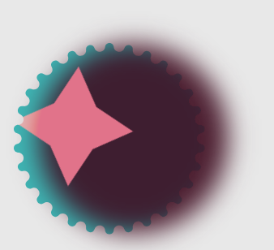
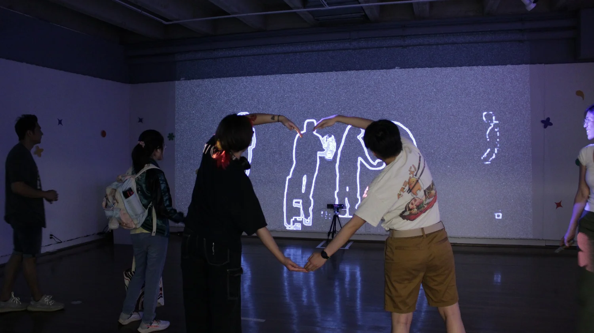
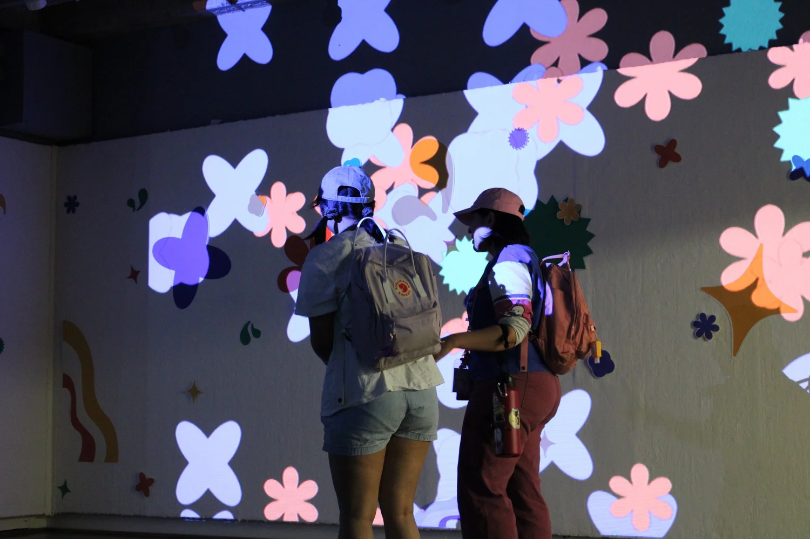
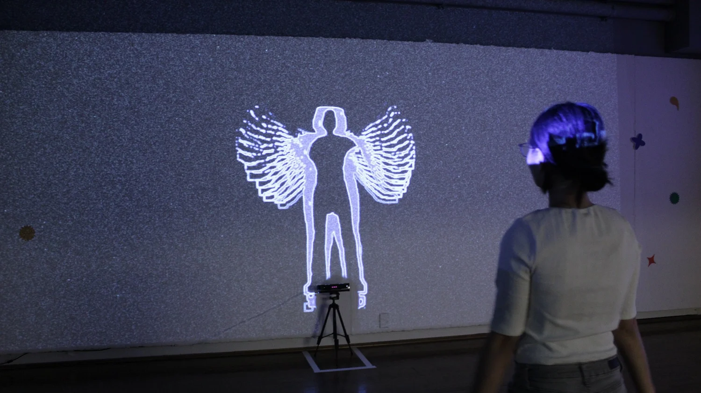
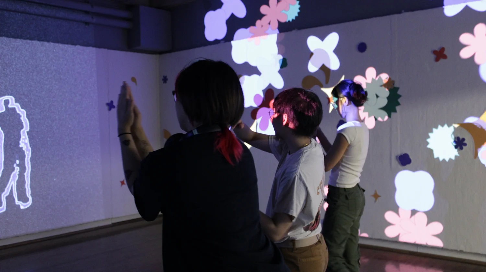
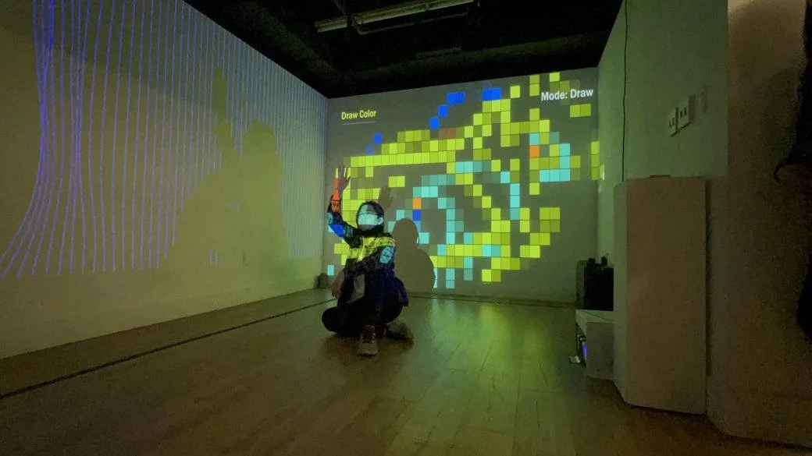
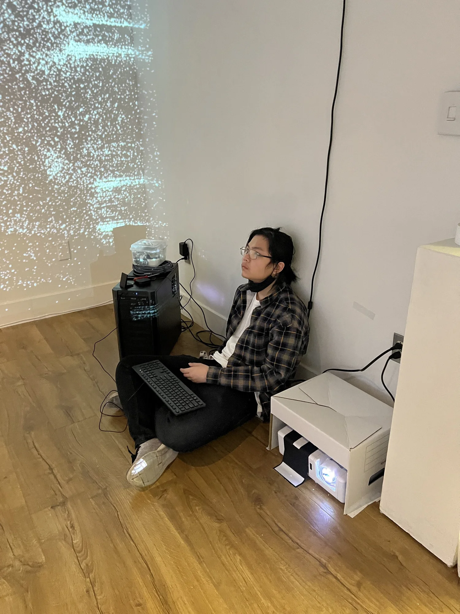

InterKinect

The videos attached below were used during the second installation of InterKinect. I was tasked with creating the visuals and setting up the exhibitions over the course of one week.
The exhibition ran for five days and was a promotion to get more students to join the CADRE S.O. club. After the promotion, 30+ new students join the club which boosted the club visibility.
The purpose behind this project was rooted in my desire to revive and redefine the creative direction of the CADRE S.O. club. By blending technology with artistic expression, I hoped to inspire both existing members and new students to explore the potential of digital art. The five-day exhibition was not just a showcase of visual work, but an invitation to interact with and become part of the CADRE community. Through this installation, I wanted to communicate how digital art can transform environments and challenge traditional perceptions of artistic expression, while also fostering a renewed sense of creativity within the club.
- This uses the Xbox Kinect to track hand movements and transfer that into circles that can apply up to 6 people.
- The user can move their hand around to paint the canvas.
- An audio-reactive art piece that can also use Xbox Kinect to track hand movement.
- The data can change the particle shape and color.
- It is mainly an audio-reactive piece. It uses sound to mimic the computer talking.
- One of the different designs for the CADRE S.O mascot.






Behind the Scene
The behind-the-scenes pictures capture one of the first times I had the responsibility of setting up a gallery and managing the technical aspects, like handling projectors, for the InterKinect installation. This experience gave me a deeper understanding of the work that goes into creating an immersive exhibition, from coordinating visuals to ensuring the technical elements enhance the overall experience. It was a learning curve, but also a rewarding opportunity to see how my creative vision could come to life in a physical space.


